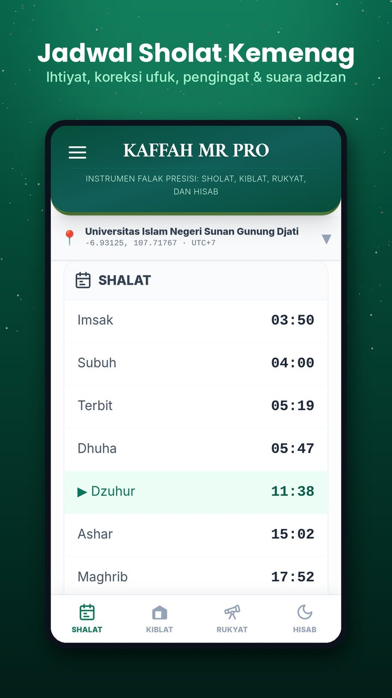
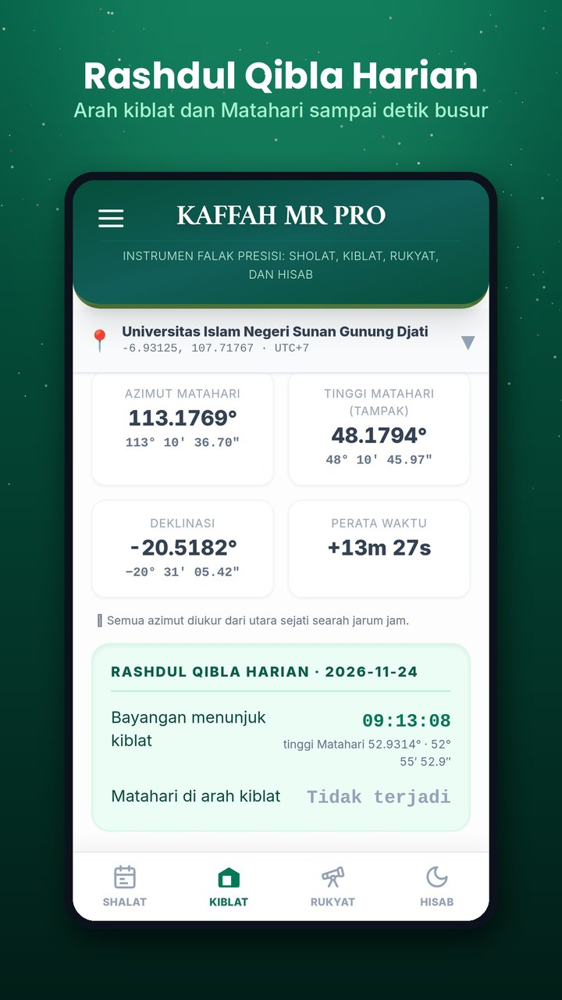
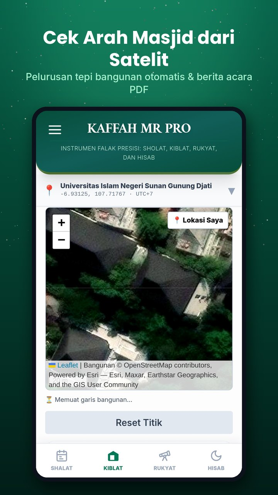
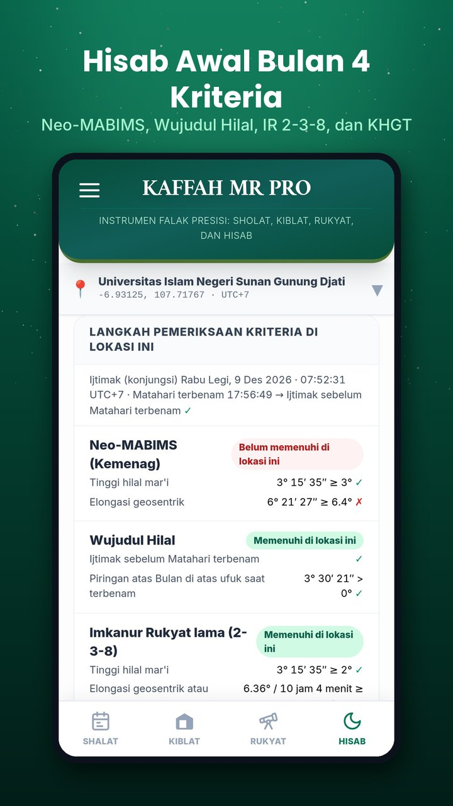
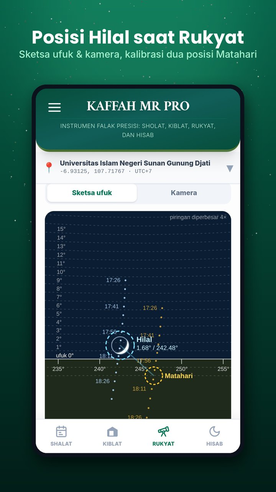
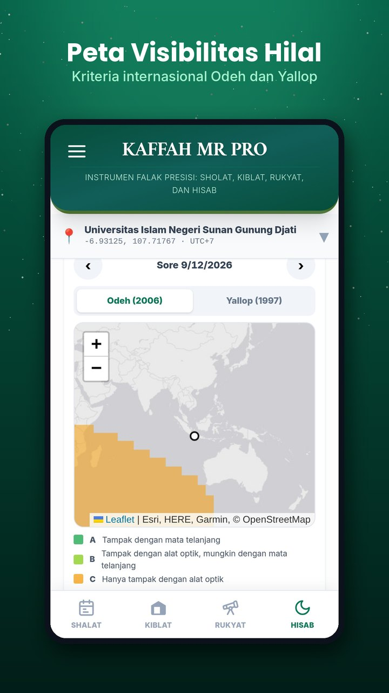
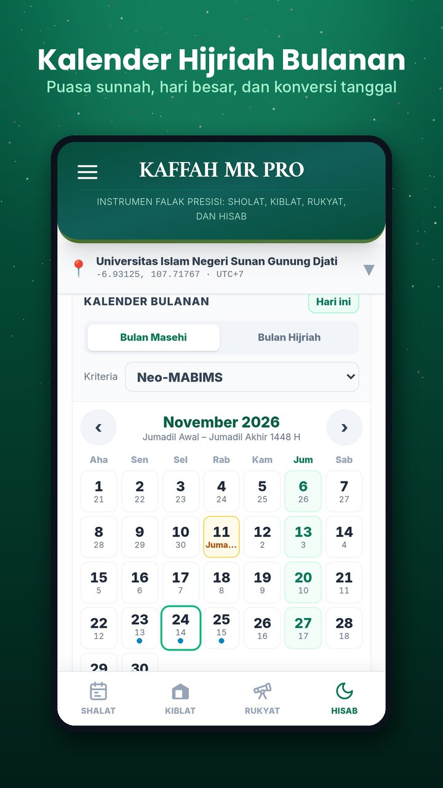
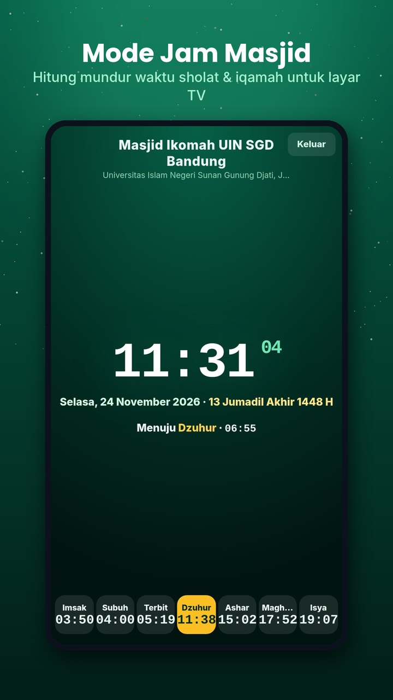

Instrumen falak presisi di genggaman: jadwal sholat, arah kiblat, rukyat hilal, dan hisab awal bulan dalam satu aplikasi.
KAFFAH MR PRO adalah aplikasi ilmu falak untuk Android yang menggabungkan perhitungan astronomi presisi dengan alat ukur di lapangan. Aplikasi ini dirancang untuk mahasiswa dan dosen ilmu falak, pengurus DKM, tim pengukur arah kiblat, pengamat hilal, dan masyarakat umum yang ingin memahami bagaimana jadwal sholat, arah kiblat, dan awal bulan Hijriah dihitung, bukan sekadar melihat angkanya.
Komunitas Astronomi dan Falak Fakultas Tarbiyah dan Keguruan (KAFFAH), UIN Sunan Gunung Djati Bandung.
Dikembangkan oleh:
Dr. Ea Cahya Septia Mahen, S.Pd., M.Si.
Dosen Pendidikan Fisika, pengampu mata kuliah Astronomi Islam
H. Saepudin Rahmatullah, M.Si.
Dosen Fakultas Tarbiyah dan Keguruan UIN Sunan Gunung Djati Bandung, pengampu mata kuliah Astronomi Islam








Setiap angka di KAFFAH MR PRO bisa ditelusuri asal-usulnya. Aplikasi ini menampilkan hasil sekaligus cara menghitungnya, dan menyediakan alat ukur yang tidak bergantung pada kompas magnet.
Aplikasi jadwal sholat umum biasanya berfokus pada kemudahan sehari-hari, sedangkan kompas kiblat biasa mengandalkan sensor magnet HP. KAFFAH MR PRO dirancang sebagai instrumen falak: dapat dipakai untuk mengukur, memverifikasi, dan mempelajari.
| Aspek | Aplikasi jadwal sholat umum | Aplikasi kompas kiblat biasa | KAFFAH MR PRO |
|---|---|---|---|
| Jadwal sholat kriteria Kemenag RI | Sebagian (sering memakai metode umum, misalnya MWL) | – | ✓ −20°/−18° + ihtiyat diatur |
| Koreksi ketinggian tempat/ufuk | Jarang | – | ✓ otomatis atau manual |
| Dasar arah kiblat | Kompas magnet HP | Kompas magnet HP | ✓ Matahari (Rashdul Qibla, teodolit) & satelit |
| Tahan gangguan besi/listrik | Tidak | Tidak | ✓ giroskop + posisi Matahari |
| Sudut dalam derajat-menit-detik & rumus | Jarang | Tidak | ✓ langkah hitung lengkap |
| Awal bulan beberapa kriteria | Biasanya satu kalender | – | ✓ 4 kriteria berdampingan |
| Rukyat: posisi hilal, Odeh/Yallop, peta visibilitas | Jarang | – | ✓ |
| Dokumen PDF (Imsakiyah berkop, berita acara, laporan rukyat) | Sebagian (jadwal) | – | ✓ |
| Iklan / langganan berbayar | Sering ada | Sering ada | Tidak ada |
| Dikembangkan oleh komunitas akademik falak | Umumnya tidak | Umumnya tidak | ✓ UIN SGD Bandung |
Perbandingan bersifat umum terhadap kategori aplikasi yang lazim di Play Store, bukan terhadap satu aplikasi tertentu. Fitur aplikasi lain dapat berbeda dan berubah.
Ya. Aplikasi ini gratis, tanpa iklan, tanpa langganan, dan tidak memerlukan akun.
Perhitungan jadwal sholat, arah kiblat, hisab, dan rukyat berjalan langsung di HP tanpa internet. Internet hanya dipakai untuk nama alamat, data ketinggian medan, peta satelit, dan pengecekan jam HP.
Arah kiblat dihitung dengan trigonometri bola terhadap utara sejati. Untuk mengukurnya di lapangan, gunakan Rashdul Qibla atau teodolit HP yang berpatokan pada posisi Matahari, sehingga lebih andal dibanding kompas magnet HP yang mudah terganggu besi dan listrik. Jam HP juga dicek otomatis karena posisi Matahari bergantung pada waktu.
Aplikasi menampilkan empat kriteria berdampingan: Neo-MABIMS (dipakai Kemenag RI), Wujudul Hilal, Imkanur Rukyat 2-3-8, dan KHGT, sehingga perbedaannya bisa dipelajari. Hasil hisab bukan penetapan resmi; pemerintah menetapkan awal bulan melalui sidang isbat.
Bisa. Tersedia langkah hitung arah kiblat dan waktu sholat beserta rumusnya, langkah pemeriksaan kriteria awal bulan, tabel ephemeris, dan pilihan sudut untuk riset. Aplikasi ini juga dipakai dalam ujian lapangan mata kuliah Astronomi Islam.
Saat ini KAFFAH MR PRO tersedia untuk Android melalui Google Play.
Gratis untuk Android 8.0 ke atas · tanpa iklan · tanpa akun